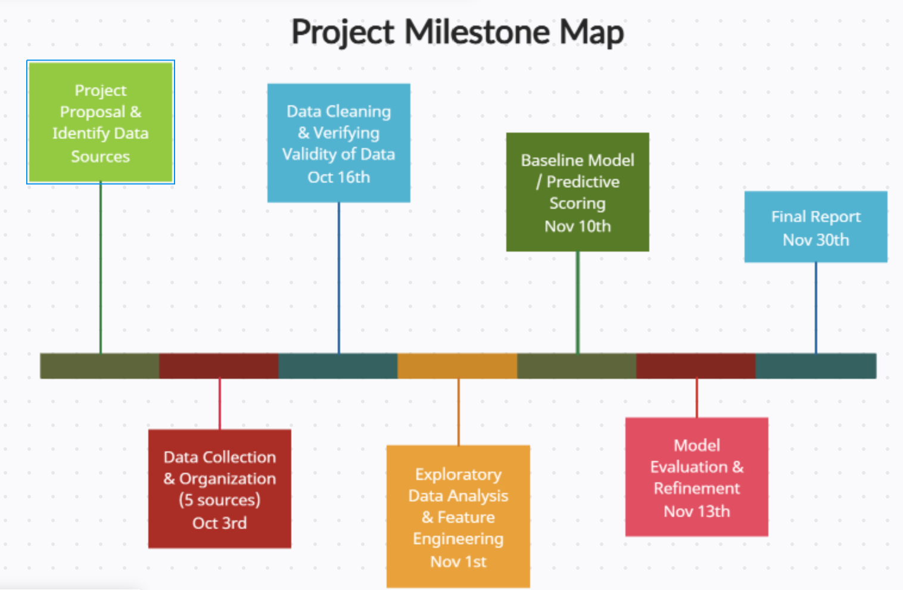

Project Introduction
Good stargazing conditions depend on more than a clear forecast.
Stargazing conditions in the Boulder, CO area depend on a combination of factors — light pollution, cloud cover, wildfire smoke, and moon or twilight conditions — that aren't currently combined into a single predictive tool. Stargazers, astro-tourism operators, and astronomy educators are left to piece it together themselves, or just guess.
This is a planning problem as much as a data problem. Right now, anyone who wants to know whether tonight is worth the drive up to a dark-sky spot has to manually cross-reference a weather app, an air-quality app, and a light-pollution map, then guess how those pieces interact.
Our goal is to build a model that predicts night sky visibility quality for a given date and time window in Boulder, producing a score or classification that lets people plan ahead rather than relying on guesswork.
Can night sky visibility quality in the Boulder, CO area be predicted from a combination of weather, air quality, light pollution, and astronomical factors on a given night?
Who this affects
The gap between "clear forecast" and "clear sky" shows up differently depending on who's asking:
- Stargazers and astrophotographers, deciding whether a trip out of the city is worth it on a given night.
- Astro-tourism operators running paid star parties and dark-sky tours, who need advance notice to plan or reschedule.
- Astronomy educators, including university programs and planetariums, timing observation sessions around conditions students can actually see something in.
- Land managers and dark-sky advocates, who use visibility data to make the case for lighting policy in areas like Boulder County.
What exists today
Each piece of this problem is already measured somewhere. The National Weather Service and Open-Meteo provide cloud cover forecasts and historical weather. The EPA's AirNow tracks hourly air quality as a proxy for wildfire smoke. The World Atlas of Artificial Night Sky Brightness maps light pollution from satellite data. The U.S. Naval Observatory publishes moon phase and twilight times. What's missing is anything that combines these into a single, forward-looking answer to the question people actually have: is tonight good for stargazing? That's the gap this project is trying to close.

Our plans this semester
